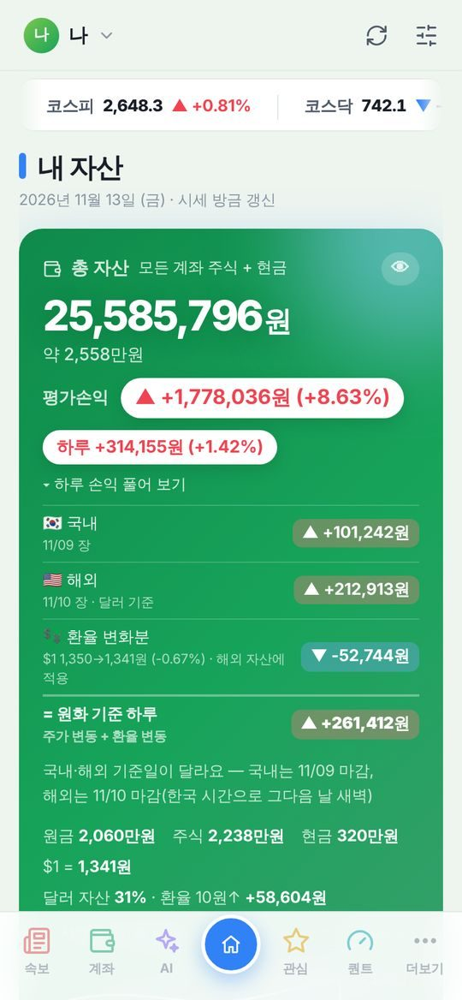
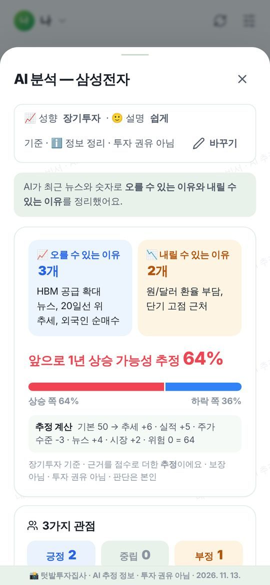
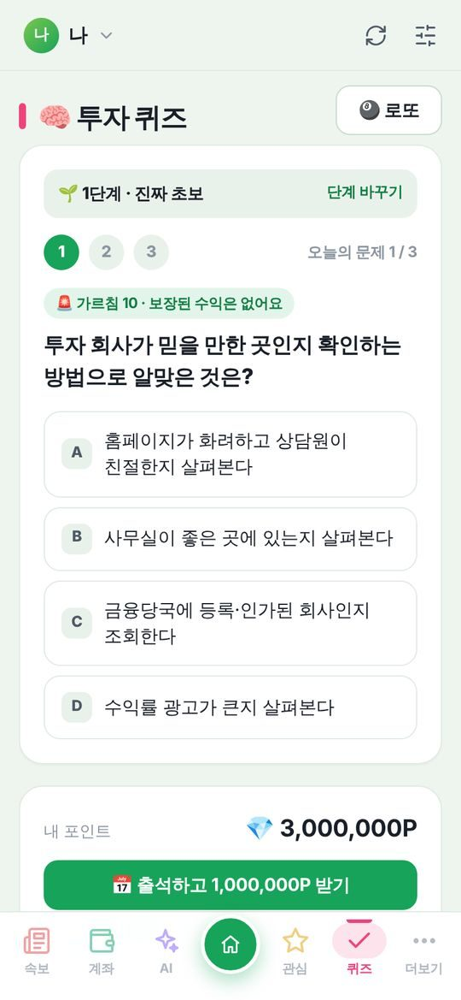
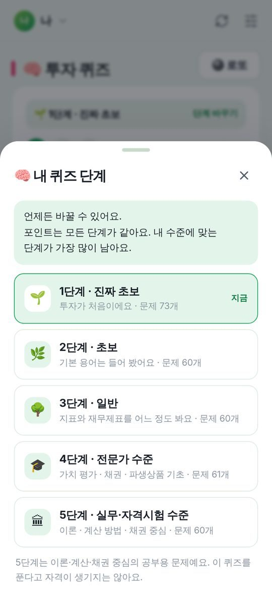
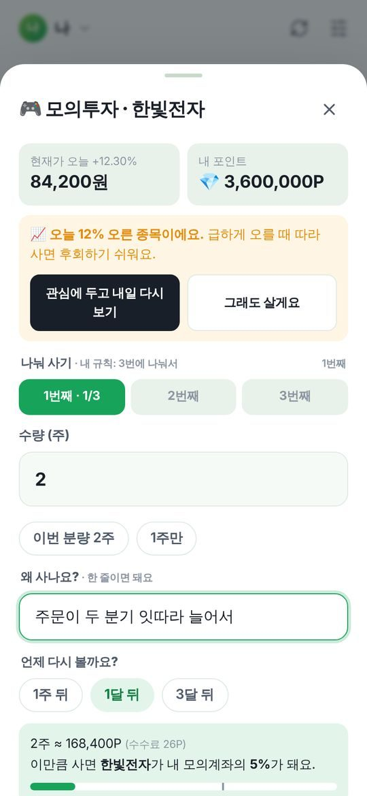
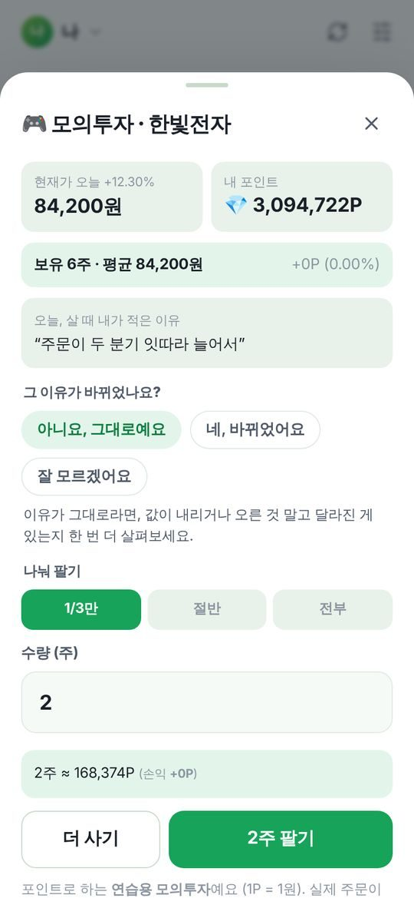
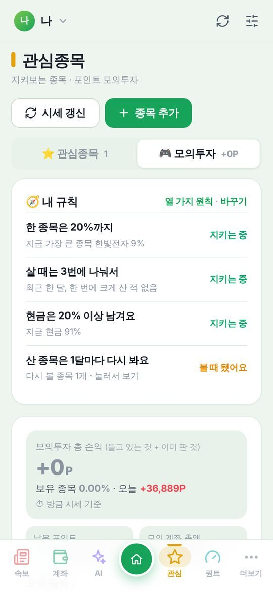
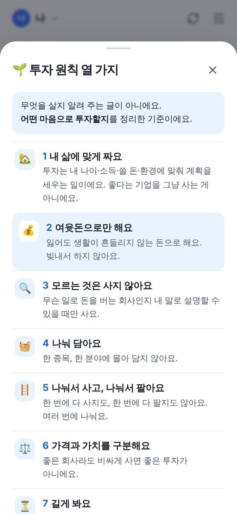

흩어진 내 주식,
한 텃밭에.
여러 증권사에 나눠 가진 종목을 직접 적어 넣으면 한 화면에 모아 보여 줘요. 뉴스와 숫자는 AI가 쉬운 말로 정리하고, 날마다 퀴즈 세 문제로 투자 공부도 해요.

화면의 숫자는 예시예요. 투자 정보를 모아 정리하고 계산해 주는 도구예요. 종목을 찍어 주거나 사라, 팔라고 하지 않아요.
이런 앱이에요
하는 일
- 내가 적은 종목을 모아서 총자산과 수익률 계산
- 뉴스와 시장 숫자를 한곳에 정리
- AI가 오를 이유와 내릴 이유를 쉬운 말로 설명
- 포인트로 하는 모의투자 연습
- 날마다 투자 퀴즈 세 문제
하지 않는 일
- 증권 계좌 연결, 주문, 이체
- 종목 추천, 사라·팔라는 말
- 수익 보장
- 유료 상담, 리딩방
- 공동인증서나 계좌 비밀번호 묻기
앱 속 ‘계좌’는 보기 편하게 나눠 둔 내 메모 칸이에요. 실제 증권 계좌와 이어지지 않아요.
내 자산을 한 화면에
- 계좌와 종목 적기증권사별로 칸을 만들고 종목, 수량, 평균가를 적어요. 종목은 이름으로 찾아 넣어요.
- 총자산과 수익률공개 시세를 받아 저절로 계산해요. 해외 주식은 원화로 바꿔 함께 보여요.
- 하루 손익 풀이국내, 해외, 환율로 나눠서 왜 늘고 줄었는지 보여요.
- 달러 자산 비중내 자산 가운데 달러 자산이 얼마인지 보여요.
- 종목 지도칸 크기는 비중, 색은 오르내림이에요.
- 더 사기 · 팔기 기록사고판 내용을 적으면 평균가를 다시 계산해요.
- 자산 기록날짜별 총자산이 쌓여 그래프가 돼요.
- 가족 따로 보기가족마다 계좌를 따로 적고 바꿔 가며 봐요.
- 금액 숨기기밖에서 볼 때 금액을 흐리게 가려요.
AI 비서
- 종목 분석오를 이유와 내릴 이유를 나란히 보여 줘요.
- 차트 분석추세와 지지·저항을 지표로 읽어 줘요.
- 계좌 점검분산, 현금, 쏠림을 100점으로 점검해요.
- 장 브리핑한국·미국 장이 열리기 전과 마감 뒤를 정리해요.
- 내 종목 뉴스 브리핑12시간, 3일, 7일 뉴스가 내 종목에 주는 영향을 봐요.
- 시장 큰 흐름시장 분위기와 요즘 돈이 몰리는 분야를 정리해요.
- 뉴스로 종목 찾기뉴스와 테마에 자주 나온 종목을 모아 줘요.
- AI 위원회 토론관점이 다른 AI 8명이 묻고 반박하고, 의장이 쟁점과 먼저 보일 신호를 정리해요.
- 프랍 코치내 계좌를 프랍 트레이더 규칙으로 점검해요.
- AI에게 물어보기무엇이든 대화로 물어봐요.
- 기록 보기AI 추정이 맞았는지, 내가 남긴 판단이 1주·1달 뒤 어땠는지 봐요.
AI는 구글 Gemini 같은 무료 AI를 내가 직접 연결해서 써요. AI 답은 추정이라 틀릴 수 있어요.
시장과 뉴스
- 시장지수, 환율, 공포·탐욕 지수, 경제 뉴스를 한 화면에서 봐요.
- 속보최근 하루 속보를 카드로 보여 줘요. 누르면 원래 기사로 가요.
- 뉴스 묶어 읽기같은 사건끼리 묶어서 상승 재료인지 하락 재료인지 표시해요.
- 오늘 급등락크게 움직인 내 종목을 모으고, 뉴스와 공시에서 이유를 찾아요.
- 해외 뉴스 번역영어 제목을 한국어로 바꿔 보여 줘요.
- 시세 전광판홈 화면에 주요 시세가 흘러가요.
시세와 뉴스는 네이버, 야후, 구글 뉴스, 언론사 같은 공개된 곳에서 받아요. 15~20분 늦을 수 있어요.
관심종목과 모의투자
- 관심종목안 가진 종목도 담아 두고 시세와 뉴스를 챙겨요.
- AI 한눈 비교관심종목끼리 근거를 나란히 견줘요.
- 포인트 모의투자실제 시세로 사고파는 연습을 해요. 진짜 돈은 들지 않아요.
- 내 규칙한 종목 비중, 나눠 사는 횟수, 남길 현금, 다시 보는 주기를 내가 정해요.
- 살 때내 규칙대로 나눠 사고, 왜 사는지 한 줄 적어요. 사면 한 종목이 몇 %가 되는지 미리 보여 줘요.
- 급하게 오른 날많이 오른 종목이면 “내일 다시 보기”를 먼저 권해요.
- 팔 때살 때 적은 이유를 다시 보여 주고, 나눠 팔 수 있어요.
- 다시 볼 때 알림정한 날이 되면 산 이유가 그대로인지 물어봐요.
- 거래 기록과 내 성적사고판 기록과 이유를 돌아봐요.
앱은 사라, 팔라고 하지 않아요. 내가 정한 규칙과 견줘 보여 주기만 해요.
투자 퀴즈와 담쌤의 가르침
- 하루 3문제네 개 가운데 하나를 골라요. 맞히면 포인트를 받고, 틀려도 잃지 않아요.
- 다섯 단계진짜 초보, 초보, 일반, 전문가 수준, 실무·자격시험 수준 가운데 내가 골라요.
- 바로 해설답을 고르면 왜 그런지 바로 알려 줘요. AI에게 더 쉽게 물어볼 수도 있어요.
- 담쌤의 가르침 열 가지내 삶에 맞게, 여윳돈으로만, 모르는 것은 사지 않기, 나눠 담기, 나눠서 사고팔기, 가격과 가치 구분, 길게 보기, 남과 비교하지 않기, 감정으로 사고팔지 않기, 보장된 수익은 없다.
- 출석 체크하루 한 번 누르면 포인트를 받아요.
- 로또 추첨기재미로 번호를 뽑아 봐요. 실제 로또와 관계없어요.
포인트는 모의투자 연습에만 써요. 현금이나 상품으로 바꿀 수 없어요.
퀀트 랩과 계산기
- 퀀트 랩 · 시장실제 일봉 자료로 시장 국면과 섹터 강도를 계산해요.
- 퀀트 랩 · 내 종목내 종목이 전략 조건에 맞는지 상태를 보여 줘요.
- 퀀트 랩 · 조건 검색조건에 맞는 종목을 찾아요.
- 퀀트 랩 · 백테스트전략이 과거에 어땠는지 검증해요.
- 수익률 계산기내 가격, 지금 가격, 수량을 넣으면 수익률과 수익금이 나와요.
- 불타기 · 물타기 계산기더 사면 평균가와 본전 가격이 어떻게 바뀌는지 계산해요.
- 프랍 리스크 계산기한 번에 걸 위험을 정하면 살 수 있는 수량이 나와요.
계산하지 못한 값은 ‘데이터 없음’으로 보여 줘요. 가짜 숫자를 채우지 않아요.
임시 텃밭 게시판
- 로그인 없이 글쓰기별명은 내가 정해요. 뒤에 폰마다 다른 번호가 붙어요.
- 글 · 공감 · 신고글을 쓰고, 공감하고, 문제 글은 신고해요. 댓글은 없어요.
- 저절로 가려짐신고가 2번 모이면 그 글은 저절로 가려져요.
- 올라가지 않는 글연락처, 링크, 종목을 찍어 주는 글, 리딩방 홍보는 올라가지 않아요.
- 내 글 지우기내가 쓴 글은 앱에서 바로 지울 수 있어요.
내게 맞추기와 관리
- 쉬운 AI 켜기 도우미큰 글씨로 한 단계씩 안내해요. 가족에게 부탁하는 메시지도 만들어 줘요.
- 투자자 정보 · 투자 성향 · 관심 섹터내 상황을 적어 두면 AI가 거기에 맞춰 설명해요.
- 투자 DNA무엇을 중요하게 보는지 직접 조절해요.
- 내 AI 캐릭터AI의 말투와 비유를 골라요.
- 화면밝은·어두운 화면, 글자 크기, 오를 때 색, 배경음을 바꿔요.
- 데이터 백업폰 안에 저절로 14일치를 보관하고, 백업 파일을 받아 둘 수 있어요.
- 자동 업데이트앱을 켜면 새 기능을 받아서 적용해요. 다시 설치하지 않아도 돼요.
- 이용권쿠폰 번호를 넣으면 기간만큼 쓸 수 있어요. 남은 기간을 설정에서 봐요.
화면 미리 보기



모두 예시 화면이고 숫자는 예시 데이터예요.
화면 미리 보기 · 모의투자




‘한빛전자’는 화면을 보여 주려고 만든 가짜 이름이에요.
받아서 설치하기
안드로이드 폰(갤럭시 등)에서만 돼요. 애플폰(아이폰)은 안 돼요. 파일이 38MB라 와이파이에서 받는 게 좋아요.
- 받기이 페이지 맨 아래의 텃밭투자집사 받기를 눌러요. “다운로드할까요?”라고 물으면 다운로드를 눌러요. 카카오톡 안에서 열었는데 받아지지 않으면, 화면 오른쪽 위의 점 세 개를 눌러 다른 브라우저로 열기를 골라 주세요.
- 파일 열기다 받으면 화면 맨 위를 아래로 쓸어내려요. “다운로드 완료” 알림을 누르면 파일이 열려요.
- 허용하기“출처를 알 수 없는 앱”이라는 말이 나오면 설정을 누르고 이 출처 허용을 켠 뒤 뒤로 돌아와요. Play 스토어 밖에서 받은 앱이라 한 번 묻는 거예요.
- 설치설치를 눌러요. 끝나면 열기를 눌러요.
처음 켜고 이용권 받기
- 기다리기처음 켜면 “새 버전 받는 중”이 잠깐 나와요. 끝날 때까지 기다려요. 1분쯤 걸려요.
- 약관 동의이용약관, 투자 위험 고지, 개인정보 처리방침을 읽고 동의해요.
- 이용권 신청이용권 신청 화면에 닉네임을 적어 보내요. 전화번호나 이메일은 적지 않아요.
- 오픈채팅에 닉네임 알리기운영자 오픈채팅에 들어와서 방금 적은 닉네임을 알려 주세요. 확인한 뒤 그 채팅으로 쿠폰 번호를 보내 드려요. 하루 이틀 걸릴 수 있어요.
- 쿠폰 넣기받은 쿠폰 번호를 같은 화면 아래 칸에 넣으면 앱이 열려요.
- 시작계좌를 만들고 종목을 적어요. AI는 쉬운 도우미로 켜기를 누르면 한 단계씩 안내해요. AI 없이도 자산 보기, 관심종목, 모의투자, 퀴즈는 쓸 수 있어요.
운영자가 받는 정보는 이게 전부예요
앱을 켤 때 6시간에 한 번
- 받는 것
- 기기 코드, 앱 이름과 버전, 쿠폰을 등록했는지, 접속한 시각
- 쓰는 곳
- 사용자 수와 정원 확인
쿠폰을 등록할 때
- 받는 것
- 쿠폰 번호, 기기 코드
- 쓰는 곳
- 쿠폰 하나를 폰 한 대에서만 쓰는지, 기간이 남았는지 확인
이용권을 신청할 때
- 받는 것
- 닉네임, 남긴 말, 기기 코드, 앱 이름과 버전
- 쓰는 곳
- 쿠폰을 보내는 데만 써요. 신청한 날부터 30일 안에 지워요.
게시판에 글을 쓰거나 공감·신고를 누를 때
- 받는 것
- 쓴 글, 말머리, 별명, 기기 코드, 시각
- 쓰는 곳
- 게시판 운영. 다른 사용자에게는 별명만 보여요.
기기 코드는 폰의 고유값을 암호로 바꾼 20자리 글자예요. 이것만으로는 누구인지 알 수 없어요.
받은 정보는 운영자의 구글 시트에 저장해요. 광고나 판매에 쓰지 않고 남에게 주지 않아요. 지워 달라고 하면 지워요. 설정 → 이용권에 보이는 ‘이 기기 코드’를 오픈채팅으로 알려 주세요.
운영자가 앱에서 투표를 열면, 투표한 분의 기기 코드와 고른 번호를 받아요. 지금은 열린 투표가 없어요.
받지 않는 것, 다른 곳으로 가는 것
운영자가 받지 않아요 · 내 폰에만 있어요
- 이름, 전화번호, 이메일, 주소
- 계좌번호, 공동인증서, 비밀번호
- 내가 적은 계좌, 보유 종목, 수량, 금액
- 관심종목, 투자자 설문, 투자 DNA
- 포인트, 퀴즈와 모의투자 기록
- AI 열쇠(키), AI와 나눈 대화
- 위치, 연락처, 사진, 문자
운영자 말고 다른 곳으로 가요
- 내가 연결한 AI 회사(예: 구글) AI 기능을 쓸 때 질문과 함께 계좌 요약(종목 이름, 수량, 수익률, 비중), 설문·투자 DNA 요약, 관심 섹터가 가요. 계좌번호, 실명, 연락처는 가지 않아요. 무료 AI는 보낸 내용을 그 회사가 AI를 고치는 데 쓸 수 있어요.
- 시세·뉴스 사이트(네이버, 야후, 구글 뉴스, 언론사) 시세와 뉴스를 받을 때 종목 코드와 이름이 가요.
- 깃허브 업데이트 파일과 퀴즈 문제를 내려받아요. 내 정보를 실어 보내지 않아요.
- 카카오 내가 오픈채팅에 들어가 나눈 대화는 카카오의 방침을 따라요.
어느 사이트든 접속하면 접속 주소(IP) 같은 일반적인 접속 기록은 그 사이트에 남을 수 있어요. AI를 켜지 않으면 AI 회사로는 아무것도 가지 않아요.
설치 전에 알아 두세요
- Play 스토어에 없는 앱이에요.이 페이지의 버튼으로만 받으세요. 카톡이나 다른 곳에서 도는 파일은 바뀐 파일일 수 있어요.
- 권한은 ‘인터넷’ 하나만 써요.연락처, 사진, 위치, 문자, 마이크, 카메라 권한을 요구하지 않아요. 요구한다면 다른 앱이에요.
- 자동으로 업데이트돼요.앱을 켜면 새 화면과 기능을 내려받아 적용해요. 운영자의 전자서명이 맞는 파일만 적용돼요.
- AI 켜기 도우미와 복사한 글.도우미는 내가 복사해 둔 글에서 구글 AI 열쇠 모양만 찾아요. 다른 내용은 저장하거나 보내지 않아요.
- 앱에 따로 잠금이 없어요.폰을 연 사람은 내 자산 화면을 볼 수 있어요. 폰 화면 잠금을 쓰세요.
- 내 정보는 폰에만 있어요.앱을 지우거나 폰을 바꾸면 사라져요. 설정 → 데이터 백업에서 백업 파일을 받아 두세요. 백업 파일에는 내 자산 정보가 들어 있으니 남에게 주지 마세요.
사칭과 투자에 대해
- 투자 권유가 아니에요.투자 정보를 모아 정리하고 계산해 주는 도구예요. 투자자문, 투자일임, 유사투자자문업이 아니에요.
- AI 답은 추정이에요.틀릴 수 있고, 지난 결과가 앞날을 보장하지 않아요.
- 판단과 책임은 본인에게 있어요.손실이 나도 마찬가지예요.
- 시세는 늦을 수 있어요.15~20분 늦게 보일 수 있어요.
- 포인트와 모의투자는 연습이에요.현금이나 상품으로 바꿀 수 없어요.
- 개인이 만든 앱이에요.증권사나 금융회사가 만들거나 보증한 앱이 아니에요.
- ‘담쌤의 가르침’운영자가 배운 투자 원칙을 열 가지로 정리한 글이에요.
여기에서 받으세요
받는 주소
https://github.com/teotbat-app/download/raw/main/teotbat_v4.32.apk공식 받기는 위 주소 하나뿐이에요. 설치한 뒤에는 앱이 스스로 최신 버전으로 올라가요.
이용권 신청은 운영자 오픈채팅으로 카카오톡신청한 분께 운영자가 직접 쿠폰 번호를 보내 드려요. 애플폰(아이폰)에서는 설치할 수 없어요.